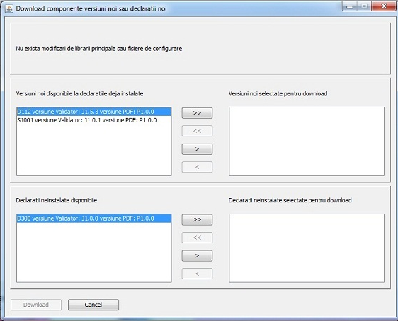
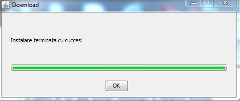

La lansarea programului DUKIntegrator, daca sunteti conectat la internet, se va deschide urmatoarea fereastra:

In sectiunea de sus a ferestrei de Download se afiseaza daca sunt modificari la bibliotecile principale (in acest caz la apsarea butonului Download se vor face automat actualizarile necesare)
La mijloc apar versiunile nou aparute ale declaratiilor deja instalate
In sectiunea de jos sunt afisate declaratiile noi care pot fi instalate.
Prin intermediul sagetilor selectati declaratiile / update-urile pe care doriti sa le faceti.
La final pasati pe butonul Download. (daca nu doriti sa faceti modificari apasati pe Cancel)
Dupa apasarea butonului Download, va apare o fereastra prin care se poate vizualiza desfasurarea procesului de upgrade.
